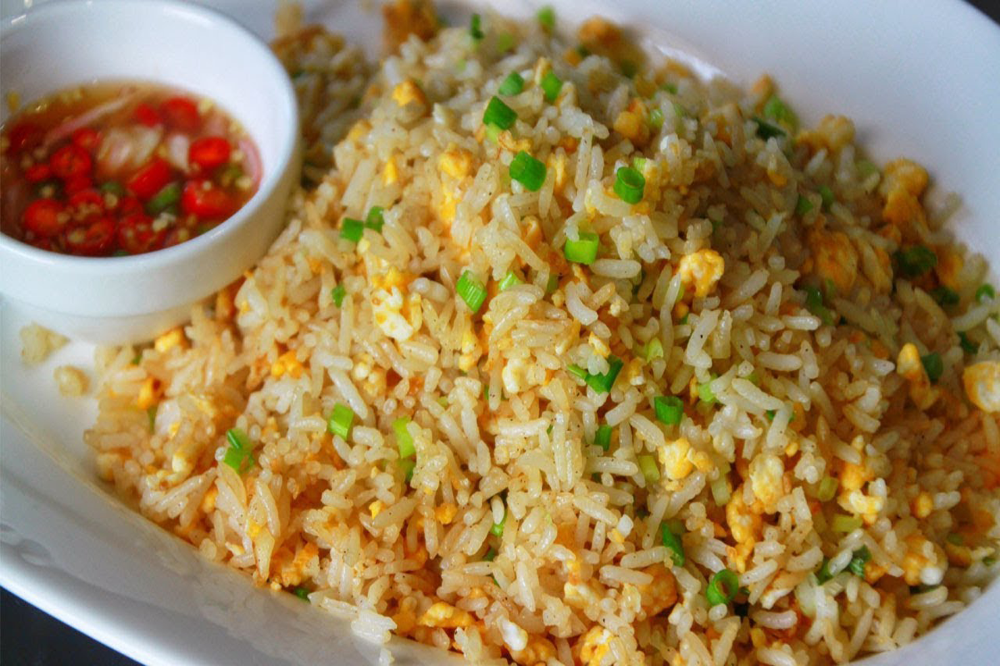

ข้าวผัด

ส่วนผสม
- ข้าวสวยแช่เย็น
- เนื้อสัตว์ตามชอบ หั่นเป็นชิ้นๆ
- แครอทหั่นเต๋า ข้าวโพดต้มสุกฝาน
- ไข่ไก่ 1 ฟอง
- ผักชี ต้นหอมสำหรับตกแต่ง
- ซอสปรุงรส
วิธีทำ
- ตอกไข่ลงไปผัดในกระทะพอสุก
- ใส่ข้าวสวยตามลงไปผัดให้เข้ากัน
- ใส่เนื้อสัตว์ ผักทั้งหมดลงไปผัดจนสุก ปรุงรสตามชอบ
- ตักใส่จาน ตกแต่งด้วยผักชีและต้นหอมซอย
ขอบคุณข้อมูลสูตรอาหารนี้จาก
กลับไปหน้าแรก